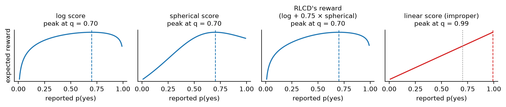
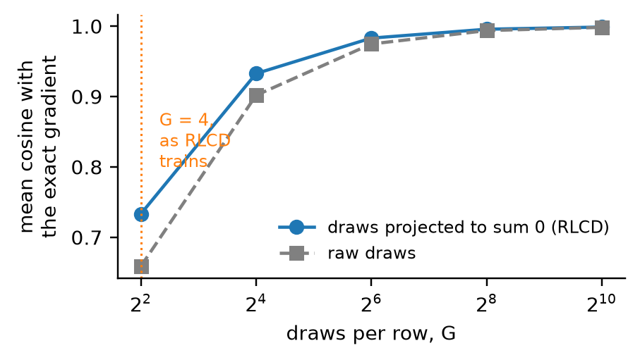
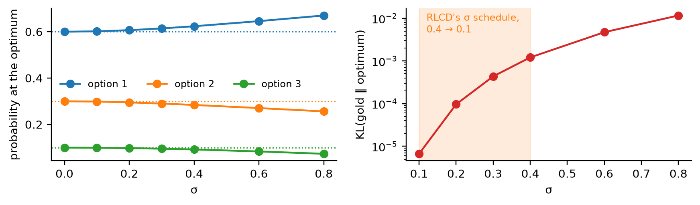
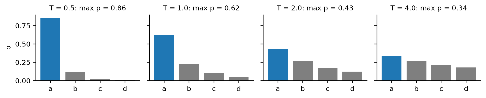
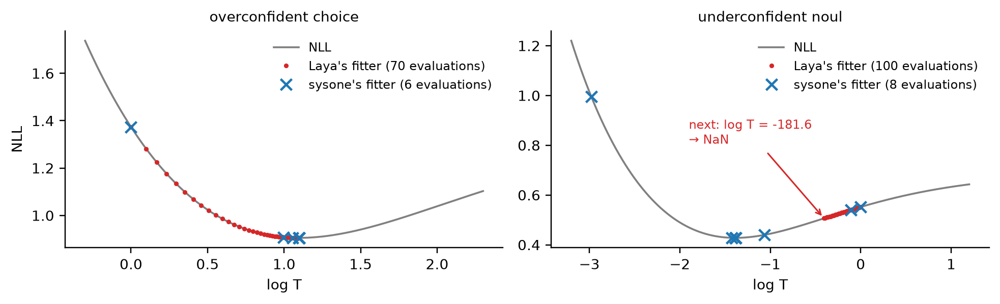
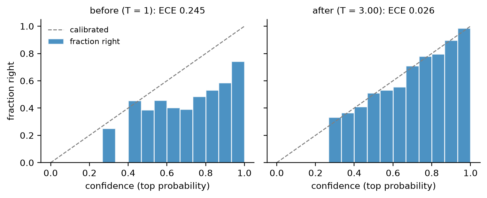
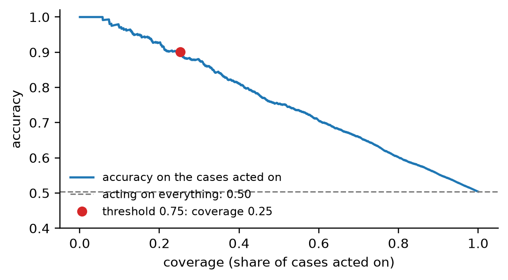

flowchart LR
Z["logits z<br/>(batch, K)"] -->|training| L{loss}
L --> CE["soft cross-entropy<br/>(labels only)"]
L --> RL["RLCD<br/>(soft gold, the default)"]
Z -->|after training, on held-out rows| TF["fit_temperatures<br/>one T per type and option count"]
TF --> P["p = softmax(z / T)"]
P --> M["metrics: accuracy, Brier,<br/>KL, ECE, score MAE"]
losses
Soft cross-entropy, Laya’s RLCD loss, temperature fitting, and the evaluation metrics of Laya’s notebook: what each one computes, why it is there, and what went wrong on the way.
A decision model is fitted twice. During training, a loss moves the weights until the probabilities at the anchors put their mass where the gold does. After training, one number per bucket of questions, a temperature, is fitted on rows the model never saw, so that a probability of 0.8 is right about 80% of the time. The metrics then check both:
A batch reaches the loss as logits (batch, K), the gold distributions over each row’s options (batch, K, zero-padded), the marker mask saying which of the K slots are real, and the question types. Any callable with that signature works as a loss.
A toy batch: a four-option choice, a noul, and a four-level score whose gold is spread over neighbouring levels. The noul has two options, so its last two slots are padding, held at \(-10^4\):
logits = torch.tensor([[2.0, 0.5, -1.0, 0.0], [0.3, -0.3, -1e4, -1e4], [0.1, 1.2, 0.4, -0.5]])
target = torch.tensor([[0.8, 0.2, 0.0, 0.0], [0.4, 0.6, 0.0, 0.0], [0.1, 0.5, 0.3, 0.1]])
mask = torch.tensor([[1, 1, 1, 1], [1, 1, 0, 0], [1, 1, 1, 1]]).bool()
qtype = torch.tensor([QTYPES["choice"], QTYPES["noul"], QTYPES["score"]])Soft cross-entropy
The cross-entropy of each row’s option probabilities against its gold distribution, the teacher’s probabilities or a one-hot label,
\[\mathcal{L}_{\mathrm{CE}} = -\frac{1}{B}\sum_{b=1}^{B}\sum_{i=1}^{k_b} t_{b,i}\,\log p_{b,i}, \qquad p_b = \mathrm{softmax}(z_b).\]
It is the default when the data has labels only, and always the evaluation loss, since it has no noise.
soft_ce
def soft_ce(
logits, target, mask, qtype:NoneType=None
):Mean cross-entropy of each row’s option logits against its gold distribution
manual = np.mean([-(target[i, :k] * torch.log_softmax(logits[i, :k], -1)).sum().item() for i, k in enumerate([4, 2, 4])])
test_close(soft_ce(logits, target, mask).item(), manual, eps=1e-5)Its gradient with respect to a logit is the gap between the probability the model gives that option and the gold’s, \(\partial\mathcal{L}/\partial z_{b,i} = (p_{b,i} - t_{b,i})/B\): every option of a row moves at once, towards its gold probability, in proportion to how wrong it is. A padded slot has probability 0 and target 0 (the masked softmax that makes it so is drawn in the models notebook), so its gradient is exactly zero, and padding needs no special case in the backward pass:
z = logits.clone().requires_grad_(True)
soft_ce(z, target, mask).backward()
p = torch.softmax(logits.masked_fill(~mask, -1e4), -1)
test_close(z.grad, (p - target) / len(z), eps=1e-6)
test_eq(z.grad[~mask].abs().max().item(), 0.0)
z.gradtensor([[-0.0300, -0.0139, 0.0118, 0.0320],
[ 0.0819, -0.0819, 0.0000, 0.0000],
[ 0.0231, 0.0030, -0.0238, -0.0023]])Proper scoring rules
A scoring rule pays a reported distribution \(q\) once the outcome \(i\) is known: the log score pays \(\log q_i\), the spherical score \(q_i/\lVert q\rVert\). A rule is strictly proper when its expected payment under the true distribution \(t\), \(\sum_i t_i\,S(q, i)\), is highest at \(q = t\) and nowhere else. A model paid by a proper rule earns most by reporting what it believes, so it is paid for calibration and not only for the argmax.
RLCD’s reward is the log score plus a weight of the spherical score, minus, for ordered score questions, the ranked probability score, \(\frac{1}{k-1}\sum_j (Q_j - T_j)^2\) over the cumulative distributions \(Q\) and \(T\), which charges for probability placed far from the gold level. The function is Laya’s proper_reward, vendored (Apache-2.0, Convai Innovations) so the core installs without Laya.
proper_reward
def proper_reward(
q, target, qtype, mask, w_sph:float=0.5, w_rps:float=1.0, log_floor:float=-9.21
):Log score + w_sph × spherical score − w_rps × ranked probability score (score questions only); from Laya
Exported source
def proper_reward(q, target, qtype, mask, w_sph:float=0.5, w_rps:float=1.0, log_floor:float=-9.21):
"Log score + w_sph × spherical score − w_rps × ranked probability score (score questions only); from Laya"
q = q * mask
logq = torch.log(q.clamp_min(1e-12)).clamp_min(log_floor)
log_score = (target * logq).sum(-1)
sph = (target * q).sum(-1) / q.norm(dim=-1).clamp_min(1e-9)
r = log_score + w_sph * sph
is_score = (qtype == QTYPES["score"]).float()
if is_score.any():
k = mask.sum(-1).clamp(min=2).float()
cdf_q, cdf_t = torch.cumsum(q, -1), torch.cumsum(target, -1)
rps = (((cdf_q - cdf_t) ** 2) * mask).sum(-1) / (k - 1)
r = r - w_rps * rps * is_score
return rOn a yes/no question whose true probability is 0.7, the expected reward of each part of RLCD’s reward, computed with proper_reward itself, peaks at a report of 0.7. The linear score \(\sum_i t_i q_i\) looks just as reasonable and is not proper: it peaks at 1, paying the model to be overconfident.
figure code
qg = torch.linspace(0.01, 0.99, 197)
Q2, T2 = torch.stack([1 - qg, qg], -1), torch.tensor([[0.3, 0.7]])
m2, ch1 = torch.ones(1, 2).bool(), torch.tensor([QTYPES["choice"]])
logs = proper_reward(Q2, T2, ch1, m2, w_sph=0.0)
curves = {"log score": logs, "spherical score": proper_reward(Q2, T2, ch1, m2, w_sph=1.0) - logs,
"RLCD's reward\n(log + 0.75 × spherical)": proper_reward(Q2, T2, ch1, m2, w_sph=0.75),
"linear score (improper)": (Q2 * T2).sum(-1)}
fig, axs = plt.subplots(1, 4, figsize=(10, 2.2), sharex=True)
for ax, (name, c) in zip(axs, curves.items()):
best = qg[c.argmax()].item()
ax.plot(qg, c, color="C3" if "improper" in name else "C0")
ax.axvline(0.7, color="gray", ls=":", lw=1); ax.axvline(best, color="C3" if "improper" in name else "C0", ls="--", lw=1)
ax.set_title(f"{name}\npeak at q = {best:.2f}"); ax.set_yticks([]); ax.set_xlabel("reported p(yes)")
axs[0].set_ylabel("expected reward"); plt.tight_layout(); plt.show()
On a score question the order of the levels matters too. With the gold on level 1 of 4 and all the reported mass on one level, the log score cannot tell a near miss from a far one (both give the gold level zero probability and hit the floor, \(\log 10^{-4} \approx -9.21\)); the ranked probability score charges a near miss a third and a miss by two levels two thirds:
gold1, m4, sc = torch.tensor([[0.0, 1.0, 0.0, 0.0]]), torch.ones(1, 4).bool(), torch.tensor([QTYPES["score"]])
rep = torch.eye(4) # all the mass on level 0, 1, 2 or 3
as_choice = proper_reward(rep, gold1, torch.tensor([QTYPES["choice"]]), m4)
as_score = proper_reward(rep, gold1, sc, m4)
pd.DataFrame({"log score": proper_reward(rep, gold1, sc, m4, w_sph=0.0, w_rps=0.0).numpy(),
"RPS charged": (as_choice - as_score).numpy(), "reward on a score question": as_score.numpy()},
index=[f"all on level {j}" for j in range(4)]).round(3)| log score | RPS charged | reward on a score question | |
|---|---|---|---|
| all on level 0 | -9.21 | 0.333 | -9.543 |
| all on level 1 | 0.00 | 0.000 | 0.500 |
| all on level 2 | -9.21 | 0.333 | -9.543 |
| all on level 3 | -9.21 | 0.667 | -9.877 |
Reporting the gold distribution itself beats reporting its argmax, and a near miss costs less than a far one:
t = torch.tensor([[0.1, 0.5, 0.3, 0.1]]); m = torch.ones(1, 4).bool()
honest = proper_reward(t, t, sc, m)
argmax = proper_reward(torch.tensor([[0.0, 1.0, 0.0, 0.0]]), t, sc, m)
near = proper_reward(torch.tensor([[0.0, 0.0, 1.0, 0.0]]), t, sc, m)
far = proper_reward(torch.tensor([[1.0, 0.0, 0.0, 0.0]]), t, sc, m)
assert honest > argmax > near and near > far - 1e-6
honest.item(), argmax.item(), near.item(), far.item()(-0.8682824969291687,
-4.414999961853027,
-6.423666477203369,
-8.565666198730469)RLCD
Laya’s training loss, from its fine-tuning notebook. Soft cross-entropy pays the log score only. RLCD pays all of the reward above, spherical score and RPS included, and pays it through reinforcement learning, which needs no gradient of the reward, only its value. The logits \(\mu\) of a row are read as the mean of a Gaussian policy over logit vectors, and one step of the loss is:
flowchart TB
MU["logits μ of a row (k options)"] --> EPS["G = 4 noise draws εᵍ ~ N(0, σ²I) on the k options,<br/>each shifted to sum to zero"]
EPS --> ZG["noisy logits zᵍ = μ + εᵍ"]
ZG --> QG["qᵍ = softmax(zᵍ)"]
QG --> RG["reward rᵍ = log score + 0.75 · spherical − RPS"]
RG --> AG["advantage Aᵍ = (rᵍ − the group's mean reward) / std"]
AG --> PG["REINFORCE term: −Aᵍ · log π(zᵍ | μ)"]
MU --> CE["soft cross-entropy (μ, t)"]
PG --> LOSS(("loss"))
CE --> LOSS
- Explore. Draw \(G = 4\) noisy copies of the logits, \(z^g = \mu + \varepsilon^g\), with Gaussian noise on the row’s real options only, and subtract from each draw its mean over the options.
- Score. Softmax each copy and reward it with the proper scoring rules against the gold.
- Compare. A copy’s advantage is its reward minus its group’s mean reward (the GRPO baseline), divided by the standard deviation of all the advantages in the batch.
- Reinforce. A Gaussian policy has \(\log\pi(z \mid \mu) = -\lVert z - \mu\rVert^2 / 2\sigma^2\) up to a constant, so the term \(-A^g \log\pi(z^g \mid \mu)\) has gradient \(-A^g\,\varepsilon^g/\sigma^2\) with respect to \(\mu\). The logits move towards the copies that scored better than their group and away from those that scored worse. Averaged over draws this estimates the gradient of the noisy policy’s expected reward: the score-function (REINFORCE) estimator.
- Guide. Soft cross-entropy is added with weight 1, an exact, low-variance gradient towards the gold beside the noisy one.
σ is annealed from 0.4 to 0.1 over training. RLCD is the default loss when the gold is a distribution, as typed-decisions’ is.
Step 1 on one row with three real options in a batch padded to four: the mask zeroes the noise on the padded slot, and subtracting each draw’s mean over the real options leaves draws that sum to zero, the only part of the noise a softmax can see:

Drawn with RLCD’s two lines of projection in figures.
rlcd_loss
def rlcd_loss(
logits, target, mask, qtype, sigma:float=0.4, group_size:int=4, w_sph:float=0.75, w_rps:float=1.0,
ce_weight:float=1.0, generator:NoneType=None
):REINFORCE on proper scoring rewards over group_size noisy copies of the logits, plus soft cross-entropy
Exported source
def rlcd_loss(logits, target, mask, qtype, sigma:float=0.4, group_size:int=4, w_sph:float=0.75, w_rps:float=1.0,
ce_weight:float=1.0, generator=None):
"REINFORCE on proper scoring rewards over `group_size` noisy copies of the logits, plus soft cross-entropy"
logits, mask = logits.float(), mask.bool()
k = mask.sum(-1, keepdim=True).float()
eps = torch.randn((group_size,) + logits.shape, device=logits.device, generator=generator) * sigma * mask
eps = (eps - eps.sum(-1, keepdim=True) / k) * mask
z = logits.detach().unsqueeze(0) + eps
q = torch.softmax(z.masked_fill(~mask, -1e4), -1)
with torch.no_grad():
r = proper_reward(q, target.unsqueeze(0), qtype, mask, w_sph=w_sph, w_rps=w_rps)
adv = r - r.mean(0, keepdim=True)
adv = adv / (adv.std() + 1e-6)
logp = -(((z - logits.unsqueeze(0)) ** 2) * mask).sum(-1) / (2 * sigma ** 2)
loss_rl = -(adv * logp).mean()
loss_ce = -(target * torch.log_softmax(logits.masked_fill(~mask, -1e4), -1)).sum(-1).mean()
return loss_rl + ce_weight * loss_ceThe same seed gives the notebook’s number exactly; here is the notebook’s code, pasted, next to it:
def notebook_loss(logits, mask, target, qtype, GROUP_SIZE=4, sigma=0.4, GRAD_ACCUM=1):
# pasted from laya_finetune_typed_decisions_2xT4_kaggle.ipynb, train_ddp.py, steps 1-3
from laya.common import proper_reward
device = logits.device
k = mask.sum(-1, keepdim=True).float()
eps = torch.randn((GROUP_SIZE,) + logits.shape, device=device) * sigma * mask
eps = (eps - eps.sum(-1, keepdim=True) / k) * mask
z = logits.detach().unsqueeze(0) + eps
q = torch.softmax(z.masked_fill(~mask, -1e4), -1)
with torch.no_grad():
r = proper_reward(q, target.unsqueeze(0), qtype, mask, w_sph=0.75, w_rps=1.0)
adv = r - r.mean(0, keepdim=True)
adv = adv / (adv.std() + 1e-6)
logp = -(((z - logits.unsqueeze(0)) ** 2) * mask).sum(-1) / (2 * sigma ** 2)
loss_rl = -(adv * logp).mean()
loss_ce = -(target * torch.log_softmax(logits.masked_fill(~mask, -1e4), -1)).sum(-1).mean()
return (loss_rl + 1.0 * loss_ce) / GRAD_ACCUMtorch.manual_seed(0); ours = rlcd_loss(logits, target, mask, qtype, sigma=0.4)
torch.manual_seed(0); theirs = notebook_loss(logits, mask, target, qtype)
test_eq(ours.item(), theirs.item())
ours.item()-0.040978074073791504What the pieces do
Three experiments on free logits, where nothing but the loss is in play, show what each piece contributes.
The projection removes noise that changes nothing. Softmax ignores a shift of all the logits by the same amount, \(\mathrm{softmax}(z + c\mathbf{1}) = \mathrm{softmax}(z)\), so the part of a noise draw along \(\mathbf{1}\) changes no reward and only adds noise to the gradient estimate; subtracting each draw’s mean removes it. Below, RLCD’s estimate from G draws is compared with the exact gradient of the noisy policy’s expected reward, computed by differentiating through 200,000 draws (the reparameterisation trick), for a four-level score question:
mu = torch.tensor([[0.5, -0.2, 0.1, -0.4]]); t4 = torch.tensor([[0.1, 0.5, 0.3, 0.1]])
reward = lambda z: proper_reward(torch.softmax(z, -1), t4, sc, m4, w_sph=0.75)
def draws(n, sigma, project, gen):
eps = torch.randn(n, 1, 4, generator=gen) * sigma
return eps - eps.mean(-1, keepdim=True) if project else eps
def exact_grad(sigma=0.4, n=200_000):
"∇μ E[r(softmax(μ + ε))], differentiating through the draws"
m_ = mu.clone().requires_grad_(True)
reward(m_ + draws(n, sigma, True, torch.Generator().manual_seed(1))).mean().backward()
return m_.grad[0]
def reinforce_grad(G, gen, sigma=0.4, project=True):
"RLCD's estimate of the same gradient from G draws: the mean of Aᵍ εᵍ / σ²"
eps = draws(G, sigma, project, gen)
r = reward(mu + eps); adv = r - r.mean(0, keepdim=True)
return (adv[..., None] * eps / sigma ** 2).mean(0)[0]
g_exact, gen = exact_grad(), torch.Generator().manual_seed(0)
Gs = [4, 16, 64, 256, 1024]
cos = {p: [np.mean([F.cosine_similarity(reinforce_grad(G, gen, project=p), g_exact, 0).item() for _ in range(300)]) for G in Gs]
for p in (True, False)}
along_ones = {p: np.std([reinforce_grad(4, gen, project=p).sum().item() for _ in range(300)]) for p in (True, False)}
assert all(a > b for a, b in zip(cos[True][:3], cos[False][:3])) and along_ones[True] < 1e-5
pd.DataFrame({"projected": cos[True], "raw draws": cos[False]}, index=[f"G = {G}" for G in Gs]).round(3), along_ones( projected raw draws
G = 4 0.733 0.659
G = 16 0.933 0.902
G = 64 0.983 0.975
G = 256 0.996 0.994
G = 1024 0.999 0.998,
{True: np.float64(4.5389115940765663e-08),
False: np.float64(0.5524720921532368)})figure code
fig, ax = plt.subplots(figsize=(4.2, 2.4))
ax.plot(Gs, cos[True], "o-", label="draws projected to sum 0 (RLCD)"); ax.plot(Gs, cos[False], "s--", color="gray", label="raw draws")
ax.axvline(4, color="C1", ls=":", lw=1); ax.text(5, 0.8, "G = 4,\nas RLCD\ntrains", color="C1", fontsize=8)
ax.set_xscale("log", base=2); ax.set_xlabel("draws per row, G"); ax.set_ylabel("mean cosine with\nthe exact gradient")
ax.legend(loc="lower right"); plt.tight_layout(); plt.show()
With four draws, as RLCD trains, one estimate points the right way on average (a mean cosine of about 0.7) and is far from exact; the cross-entropy term is what keeps a step reliable. The projection helps at every group size, and leaves nothing at all along \(\mathbf{1}\) (the standard deviation of that component, printed above, is 0 against about 0.5 for raw draws).
σ moves the optimum, which is why it is annealed. The average of the softmaxes of noisy logits is flatter than the softmax of their mean, so the logits that maximise the noisy policy’s expected reward are sharper than the gold: the policy over-sharpens to make up for its own noise. The optimum, found by LBFGS over a fixed set of draws, for a three-option question with gold (0.6, 0.3, 0.1):
t3, m3, ch = torch.tensor([[0.6, 0.3, 0.1]]), torch.ones(1, 3).bool(), torch.tensor([QTYPES["choice"]])
base = torch.randn(20_000, 1, 3, generator=torch.Generator().manual_seed(0)); base = base - base.mean(-1, keepdim=True)
def noisy_optimum(sigma):
"softmax of the logits that maximise the expected reward of N(μ, σ²) noisy copies"
mu_ = torch.log(t3).clone().requires_grad_(True)
opt = torch.optim.LBFGS([mu_], max_iter=200, line_search_fn="strong_wolfe")
def closure():
opt.zero_grad(); loss = -proper_reward(torch.softmax(mu_ + sigma * base, -1), t3, ch, m3, w_sph=0.75).mean()
loss.backward(); return loss
opt.step(closure)
return torch.softmax(mu_.detach(), -1)[0]
sigmas = [0.0, 0.1, 0.2, 0.3, 0.4, 0.6, 0.8]
opt_p = torch.stack([noisy_optimum(s) for s in sigmas])
kl = (t3 * (t3 / opt_p).log()).sum(-1)
assert kl[1] < 1e-4 < kl[4] and (kl[1:].diff() > 0).all()
pd.DataFrame(opt_p.numpy(), columns=["p₁ (gold 0.6)", "p₂ (gold 0.3)", "p₃ (gold 0.1)"], index=[f"σ = {s}" for s in sigmas]).assign(**{"KL(gold ‖ p)": kl.numpy()}).round(4)| p₁ (gold 0.6) | p₂ (gold 0.3) | p₃ (gold 0.1) | KL(gold ‖ p) | |
|---|---|---|---|---|
| σ = 0.0 | 0.6000 | 0.3000 | 0.1000 | 0.0000 |
| σ = 0.1 | 0.6018 | 0.2988 | 0.0995 | 0.0000 |
| σ = 0.2 | 0.6068 | 0.2953 | 0.0980 | 0.0001 |
| σ = 0.3 | 0.6143 | 0.2902 | 0.0955 | 0.0004 |
| σ = 0.4 | 0.6236 | 0.2841 | 0.0922 | 0.0012 |
| σ = 0.6 | 0.6457 | 0.2707 | 0.0836 | 0.0047 |
| σ = 0.8 | 0.6701 | 0.2564 | 0.0735 | 0.0116 |
figure code
fig, (a1, a2) = plt.subplots(1, 2, figsize=(8, 2.4))
for i, g in enumerate(t3[0]):
a1.plot(sigmas, opt_p[:, i], "o-", color=f"C{i}", label=f"option {i + 1}"); a1.axhline(g, color=f"C{i}", ls=":", lw=1)
a1.set_xlabel("σ"); a1.set_ylabel("probability at the optimum"); a1.legend(ncol=3, loc="center left")
a2.semilogy(sigmas[1:], kl[1:], "o-", color="C3"); a2.axvspan(0.1, 0.4, color="C1", alpha=0.15)
a2.text(0.12, kl[1:].max() * 0.4, "RLCD's σ schedule,\n0.4 → 0.1", color="C1", fontsize=8)
a2.set_xlabel("σ"); a2.set_ylabel("KL(gold ‖ optimum)")
plt.tight_layout(); plt.show()
The bias grows with σ², invisible at σ = 0.1 and a KL of about 0.001 at 0.4. Annealing σ from 0.4 to 0.1 explores widely early, when the logits are far from any optimum, and ends on an objective whose optimum is the gold.
It converges, and keeps moving. A few hundred steps of RLCD on free logits bring the reported distributions to the gold:
def train_free(loss_fn, steps=300, seed=0):
torch.manual_seed(seed)
z = torch.zeros(3, 4, requires_grad=True); opt = torch.optim.Adam([z], lr=0.05); hist = []
for _ in range(steps):
opt.zero_grad(); loss_fn(z).backward(); opt.step()
hist.append(torch.softmax(z.detach().masked_fill(~mask, -1e4), -1))
return torch.stack(hist)
h_rlcd = train_free(lambda z: rlcd_loss(z, target, mask, qtype, sigma=0.2))
h_ce = train_free(lambda z: soft_ce(z, target, mask))
test_close(h_rlcd[-1], target, eps=0.08)
{"RLCD": h_rlcd[-100:].std(0).max().item(), "soft CE": h_ce[-100:].std(0).max().item()}{'RLCD': 0.020456813275814056, 'soft CE': 0.0009159934124909341}The numbers above are the largest standard deviation of any probability over the last 100 steps. The advantages are normalised to unit spread, so the REINFORCE term’s gradient keeps its size as the model improves, where the cross-entropy’s shrinks to zero at the optimum: RLCD’s iterates keep jittering around the answer, and its logged training loss is noisier than a cross-entropy’s. The learning rate’s decay to zero (cosine, or one-cycle) is what lets a run settle.
RLCD wraps the loss with its σ schedule; the learner’s SigmaSchedule callback sets the progress at every epoch, as the notebook anneals σ once per epoch:
RLCD
def RLCD(
sigma:tuple=(0.4, 0.1), group_size:int=4, w_sph:float=0.75, w_rps:float=1.0, ce_weight:float=1.0
):Laya’s RLCD loss with σ annealed from sigma[0] to sigma[1] over training
loss = RLCD()
test_eq([(loss.set_epoch(e, 4), round(loss.sigma, 3))[1] for e in range(4)], [0.4, 0.3, 0.2, 0.1])get_loss resolves a name or a callable, and picks the default from the data: RLCD when some gold targets are distributions, soft cross-entropy when every target is one-hot.
get_loss
def get_loss(
loss:NoneType=None, targets:NoneType=None
):The loss callable for a name (‘soft_ce’, ‘rlcd’), a callable, or the data’s default
is_soft
def is_soft(
targets
)->bool:Whether any target distribution is not one-hot (an unanswerable row’s zero target does not count)
test_eq(get_loss(targets=[[0, 1], [1, 0, 0]]), soft_ce)
assert isinstance(get_loss(targets=[[0.2, 0.8]]), RLCD)
test_fail(lambda: get_loss("hinge"), contains="unknown loss")Temperature scaling
What a temperature does
After training, the logits of every row in a bucket are divided by one number, \(p = \mathrm{softmax}(z/T)\). \(T > 1\) flattens the distribution, for a model that is too sure of itself; \(T < 1\) sharpens it, for one that is not sure enough. Dividing all of a row’s logits by the same positive number never changes their order, so the answer never changes, only how confident it is: calibration moves Brier, KL and ECE and leaves accuracy where it was (the head-only ModernBERT-large run in the text notebook: 0.504 before and after).
figure code
zt = torch.tensor([2.0, 1.0, 0.2, -0.5])
fig, axs = plt.subplots(1, 4, figsize=(9, 1.9), sharey=True)
for ax, T in zip(axs, (0.5, 1.0, 2.0, 4.0)):
pt = torch.softmax(zt / T, -1)
ax.bar(range(4), pt, color=["C0"] + ["C7"] * 3); ax.set_title(f"T = {T}: max p = {pt.max():.2f}")
ax.set_xticks(range(4), ["a", "b", "c", "d"])
axs[0].set_ylabel("p"); plt.tight_layout(); plt.show()
Fitting one
The temperature of a bucket is the one that minimises the negative log-likelihood of the gold distributions over held-out rows,
\[\mathrm{NLL}(T) = -\frac{1}{N}\sum_{n=1}^{N}\sum_{i} t_{n,i}\,\log\mathrm{softmax}(z_n / T)_i,\]
Laya’s fit_one_temp. The rows must be held out: on rows the model trained on it is near-certain and near-correct, so the fit would sharpen it further whatever it does on new rows; fit_temperatures only ever sees the calibration slice. In \(\beta = 1/T\) the NLL is convex (its second derivative is the variance of \(z\) under \(p\)), so it has a single minimum; like Laya, sysone fits \(u = \log T\), which keeps \(T\) positive but is not convex, as the finding below shows. Values are clamped to [0.5, 5], the range Laya’s runtime applies, and trace, a list, collects every evaluation of the fit.
fit_temperature
def fit_temperature(
logits, targets, masks, min_rows:int=10, trace:list | None=None
):The temperature minimising the gold-distribution NLL of logits (rows, K), or None with fewer than min_rows
Exported source
def fit_temperature(logits, targets, masks, min_rows:int=10, trace:list|None=None):
"The temperature minimising the gold-distribution NLL of `logits` (rows, K), or None with fewer than `min_rows`"
if len(logits) < min_rows: return None
M = torch.as_tensor(np.asarray(masks)).bool()
Z = torch.as_tensor(np.asarray(logits), dtype=torch.float32).masked_fill(~M, -1e4)
T = torch.as_tensor(np.asarray(targets), dtype=torch.float32)
def nll(log_t):
logp = torch.log_softmax(Z / log_t.exp(), -1)
# padded slots are masked out rather than multiplied by a zero target: a step to a tiny T sends
# their logits to -inf, and 0 × -inf would poison the loss with NaN
return -torch.where(M, T * logp, torch.zeros_like(logp)).sum(-1).mean()
log_t = torch.zeros(1, requires_grad=True)
opt = torch.optim.LBFGS([log_t], lr=1.0, max_iter=100, line_search_fn="strong_wolfe")
def closure():
opt.zero_grad(); loss = nll(log_t); loss.backward()
if trace is not None: trace.append((log_t.item(), loss.item()))
return loss
opt.step(closure)
t = log_t.exp().item()
if not math.isfinite(t): # a grid over [0.05, 20] as the fallback, should the optimiser ever fail
grid = torch.linspace(math.log(0.05), math.log(20), 200)
with torch.no_grad(): t = grid[torch.stack([nll(g) for g in grid]).argmin()].exp().item()
return clamp_temperature(t)Two synthetic buckets to fit, with gold distributions known by construction: an overconfident model whose logits are three times too large, which wants \(T = 3\), and an underconfident noul model whose logits are four times too small, which wants \(T = 0.25\) (the clamp raises that to 0.5 when it is stored):
g = torch.Generator().manual_seed(0)
true_z = torch.randn(400, 4, generator=g) * 1.5
gold = torch.softmax(true_z, -1)
over = (3 * true_z, gold, torch.ones(400, 4).bool())
under = (0.25 * true_z[200:, :2], torch.softmax(true_z[200:, :2], -1), torch.ones(200, 2).bool())
T3 = fit_temperature(*over)
test_close(T3, 3.0, eps=0.05)
T32.999999523162842The convexity in \(\beta\), checked with autograd on the underconfident bucket: the first derivative of the NLL is the mean of \(\sum_i (p_i - t_i) z_i\) and the second is the mean variance of \(z\) under \(p\), which cannot be negative. The optimiser works in \(\log T\) all the same, and there the curvature can vanish, which is what the finding below is about.
Zu, Tu, _ = under
beta = torch.tensor(1.0, requires_grad=True)
nll_beta = -(Tu * torch.log_softmax(Zu * beta, -1)).sum(-1).mean()
d1, = torch.autograd.grad(nll_beta, beta, create_graph=True)
d2, = torch.autograd.grad(d1, beta)
pu = torch.softmax(Zu, -1)
test_close(d1, ((pu - Tu) * Zu).sum(-1).mean(), eps=1e-5)
test_close(d2, ((pu * Zu ** 2).sum(-1) - (pu * Zu).sum(-1) ** 2).mean(), eps=1e-5)
d1.item(), d2.item()(-0.10632878541946411, 0.06328226625919342)
NoteFinding: Laya’s fitter returns NaN on an underconfident model
Laya’s notebook fits the temperature with LBFGS(lr=0.1) and no line search. Run verbatim on the two buckets above, it gets the overconfident one right after 70 evaluations; on the underconfident one it creeps towards the answer for 37 evaluations, then jumps to \(T \approx 10^{-79}\) and returns NaN. sysone’s fitter adds a strong-Wolfe line search and two guards, and needs 6 to 8 evaluations for either bucket.
Laya’s function, pasted from the notebook, with one line added to record its evaluations:
def laya_fit_one_temp(sel, trace=None):
# pasted from laya_finetune_typed_decisions_2xT4_kaggle.ipynb (Apache-2.0, Convai Innovations); `trace` added
if len(sel) < 10:
return 1.0
kmax = max(len(z) for z, _ in sel)
Z = torch.full((len(sel), kmax), -1e4)
T = torch.zeros((len(sel), kmax))
for i, (z, t) in enumerate(sel):
Z[i, :len(z)] = torch.tensor(z)
T[i, :len(t)] = torch.tensor(t, dtype=torch.float32)
log_t = torch.zeros(1, requires_grad=True)
opt = torch.optim.LBFGS([log_t], lr=0.1, max_iter=100)
def closure():
opt.zero_grad()
loss = -(T * torch.log_softmax(Z / log_t.exp(), -1)).sum(-1).mean()
loss.backward()
if trace is not None: trace.append((log_t.item(), loss.item(), log_t.grad.item())) # added
return loss
opt.step(closure)
return float(torch.clamp(log_t.exp(), 0.1, 10.0).item())
as_sel = lambda Z, T, M: [(z[m].tolist(), t[m].tolist()) for z, t, m in zip(Z, T, M)]
runs = {}
for name, bucket in {"overconfident choice (wants T = 3)": over, "underconfident noul (wants T = 0.25)": under}.items():
tl, ts = [], []
runs[name] = dict(laya_T=laya_fit_one_temp(as_sel(*bucket), tl), laya_evals=len(tl),
sysone_T=fit_temperature(*bucket, trace=ts), sysone_evals=len(ts), traces=(tl, ts))
table = pd.DataFrame(runs).T.drop(columns="traces"); table| laya_T | laya_evals | sysone_T | sysone_evals | |
|---|---|---|---|---|
| overconfident choice (wants T = 3) | 2.995789 | 70 | 3.0 | 6 |
| underconfident noul (wants T = 0.25) | NaN | 100 | 0.5 | 8 |
test_eq(math.isnan(runs["underconfident noul (wants T = 0.25)"]["laya_T"]), True)
test_eq(runs["underconfident noul (wants T = 0.25)"]["sysone_T"], 0.5) # 0.25, clamped
assert all(r["sysone_evals"] <= 10 for r in runs.values())Why it happens. Without a line search, torch’s LBFGS takes a fixed tenth (lr=0.1) of the step its curvature model proposes, which is why it creeps. It has no curvature to start from, so it estimates it from the last move \(s\) and the change in slope \(y\) that move caused; in one dimension its step is the secant step, \(-g\,s/y\). The NLL in \(\log T\) has an inflection point: going down from \(T = 1\) its slope first grows, from 0.106 to 0.116, before falling to 0 at the minimum. Near the inflection the slope stops changing, \(y \to 0\), and the secant step explodes. The last evaluations of Laya’s run on the underconfident bucket:
tl = runs["underconfident noul (wants T = 0.25)"]["traces"][0]
bad = next(i for i, (u, l, g_) in enumerate(tl) if not math.isfinite(l))
pd.DataFrame([dict(evaluation=i, log_T=u, T=math.exp(u) if math.isfinite(u) else float("nan"), nll=l, slope=g_) for i, (u, l, g_) in enumerate(tl)][bad - 4:bad + 2]).set_index("evaluation")| log_T | T | nll | slope | |
|---|---|---|---|---|
| evaluation | ||||
| 33 | -0.370238 | 6.905702e-01 | 0.510493 | 0.116144 |
| 34 | -0.381852 | 6.825960e-01 | 0.509144 | 0.116186 |
| 35 | -0.393471 | 6.747111e-01 | 0.507794 | 0.116206 |
| 36 | -0.405091 | 6.669159e-01 | 0.506444 | 0.116205 |
| 37 | -181.649902 | 1.289584e-79 | NaN | NaN |
| 38 | NaN | NaN | NaN | NaN |
(u0, _, g0), (u1, _, g1) = tl[bad - 2], tl[bad - 1]
{"move s": u1 - u0, "change in slope y": g1 - g0, "secant step −g·s/y": -g1 * (u1 - u0) / (g1 - g0), "jump taken": tl[bad][0] - u1}{'move s': -0.01162061095237732,
'change in slope y': -7.450580596923828e-07,
'secant step −g·s/y': -1812.447051409781,
'jump taken': -181.2448110282421}The slope changed by less than a millionth (\(-7 \times 10^{-7}\)) while the point moved by 0.012, so the secant step is \(-1{,}812\) in \(\log T\); a tenth of it is taken, and the jump lands at \(\log T = -181.6\), \(T = 10^{-79}\), where \(z/T\) overflows float32 and the log-softmax of \(\infty - \infty\) is NaN. Every evaluation after that is NaN, and so is the returned temperature. The curve, with both fitters’ evaluations on it:
figure code
fig, axs = plt.subplots(1, 2, figsize=(9, 2.8))
for ax, (name, bucket), (lo, hi) in zip(axs, {"overconfident choice": over, "underconfident noul": under}.items(), ((-0.3, 2.3), (-3.2, 1.2))):
tl, ts = runs[next(k for k in runs if k.startswith(name))]["traces"]
Zb, Tb, Mb = bucket
us = torch.linspace(lo, hi, 400)
ax.plot(us, [-(Tb * torch.log_softmax(Zb / math.exp(u), -1)).sum(-1).mean().item() for u in us], color="gray", lw=1.2, label="NLL")
fin = [(u, l) for u, l, _ in tl if math.isfinite(l)]
ax.plot(*zip(*fin), ".", color="C3", ms=4, label=f"Laya's fitter ({len(tl)} evaluations)")
ax.plot(*zip(*ts), "x", color="C0", ms=7, mew=1.5, label=f"sysone's fitter ({len(ts)} evaluations)")
if len(fin) < len(tl):
ax.annotate(f"next: log T = {tl[len(fin)][0]:.1f}\n→ NaN", xy=fin[-1], xytext=(-1.9, fin[-1][1] + 0.3),
arrowprops=dict(arrowstyle="->", color="C3"), color="C3", fontsize=8)
ax.set_title(name); ax.set_xlabel("log T"); ax.legend(loc="upper right")
axs[0].set_ylabel("NLL"); plt.tight_layout(); plt.show()
The fix is a line search. With line_search_fn="strong_wolfe" a step is tried before it is taken, and kept only if it lowers the loss enough (the Armijo condition) and leaves the slope flatter (the curvature condition); a trial at \(T = 10^{-79}\) fails the first and is cut back. It also takes whole steps where they work, hence 6 to 8 evaluations instead of 70 to 100. Two guards stay for anything the line search does not catch. Padded slots are masked with torch.where rather than multiplied by their zero targets, because a trial at a tiny \(T\) sends their logits to \(-\infty\), and \(0 \times (-\infty)\) is NaN even though the slot should contribute nothing:
z_pad, t_pad, m_pad = torch.tensor([[1.0, 0.5, -1e4]]), torch.tensor([[0.7, 0.3, 0.0]]), torch.tensor([[True, True, False]])
logp = torch.log_softmax(z_pad / 1e-36, -1) # the padded slot: -1e4 / 1e-36 is -inf in float32
multiplied, masked = (t_pad * logp).sum(), torch.where(m_pad, t_pad * logp, torch.zeros_like(logp)).sum()
test_eq((math.isnan(multiplied), math.isfinite(masked)), (True, True))
logp, multiplied, masked(tensor([[ 0.0000e+00, -5.0000e+35, -inf]]),
tensor(nan),
tensor(-1.5000e+35))and, if the result is still not finite, a grid over \(T \in [0.05, 20]\) picks the temperature.
Buckets
fit_temperatures fits one temperature per question type, then one per type and option-count bucket (choice:2, choice:3-5, choice:6-10, choice:11+) where the bucket has at least min_rows rows. Different kinds of question need different corrections: the head-only ModernBERT-large run of the text notebook fitted 0.97 for choices, 1.17 for scores and 1.53 for nouls.
fit_temperatures
def fit_temperatures(
logits, targets, masks, qtypes, min_rows:int=10
)->dict:Temperatures per question type (choice) and per type and option-count bucket (choice:3-5); unanswerable rows sit out
Z = torch.cat([2 * true_z[:200], torch.cat([0.25 * true_z[200:, :2], torch.full((200, 2), -1e4)], 1)])
Tg = torch.cat([gold[:200], torch.cat([torch.softmax(true_z[200:, :2], -1), torch.zeros(200, 2)], 1)])
M = torch.cat([torch.ones(200, 4), torch.cat([torch.ones(200, 2), torch.zeros(200, 2)], 1)]).bool()
Q = torch.tensor([QTYPES["choice"]] * 200 + [QTYPES["noul"]] * 200)
temps = fit_temperatures(Z, Tg, M, Q)
test_close(temps["choice:3-5"], 2.0, eps=0.05)
test_eq(temps["noul:2"], 0.5) # logits 4× too small want T = 0.25; the clamp stops at 0.5
temps{'choice': 2.0, 'choice:3-5': 2.0, 'noul': 0.5, 'noul:2': 0.5}Metrics
The definitions are those of Laya’s evaluation cell, so a sysone run is comparable with the published numbers. Per decision: accuracy (the argmax against the gold label; for a noul, p(true) ≥ 0.5 against the gold truth value), and for choice and noul questions soft accuracy \(\sum p\,g\), Brier \(\sum (p - g)^2\), total variation and KL from gold; for score questions the absolute error of the expected level and whether it is within one level.
The expected calibration error sorts decisions into bins by their top probability and compares, in each bin, the mean confidence with the fraction that was right: \(\mathrm{ECE} = \sum_b \frac{n_b}{N}\,\lvert \mathrm{conf}_b - \mathrm{acc}_b\rvert\). A calibrated model’s decisions at confidence 0.8 are right 80% of the time and score 0. ece_score is Laya’s, vendored.
ece_score
def ece_score(
conf, correct, bins:int=15
)->float:Expected calibration error across equal-width confidence bins; from Laya
Exported source
def ece_score(conf, correct, bins:int=15) -> float:
"Expected calibration error across equal-width confidence bins; from Laya"
conf, correct = np.asarray(conf, dtype=float), np.asarray(correct, dtype=float)
if len(conf) == 0: return float("nan")
edges = np.linspace(0, 1, bins + 1)
e = 0.0
for i, (lo, hi) in enumerate(zip(edges[:-1], edges[1:])):
sel = (conf >= lo if i == 0 else conf > lo) & (conf <= hi)
if sel.any(): e += sel.mean() * abs(conf[sel].mean() - correct[sel].mean())
return float(e)rng = np.random.default_rng(0)
c = rng.uniform(0.3, 1, 20000)
test_close(ece_score(c, rng.uniform(size=c.shape) < c), 0.0, eps=0.01) # calibrated: confidence = hit rate
test_close(ece_score(np.full(1000, 0.9), np.zeros(1000)), 0.9)A reliability diagram draws the bins. For an overconfident model (logits three times too large, outcomes drawn from the true probabilities), the temperature fitted on one half of the rows closes the gap on the other half, without changing a single answer:
g2 = torch.Generator().manual_seed(1)
zc = torch.randn(4000, 4, generator=g2) * 1.5
y = torch.multinomial(torch.softmax(zc, -1), 1, generator=g2)[:, 0] # outcomes drawn from the true probabilities
model_z, fit_half, test_half = 3 * zc, slice(0, 2000), slice(2000, 4000)
T_fit = fit_temperature(model_z[fit_half], torch.softmax(zc[fit_half], -1), torch.ones(2000, 4).bool())
rel = {}
for name, T in (("before (T = 1)", 1.0), (f"after (T = {T_fit:.2f})", T_fit)):
p_ = torch.softmax(model_z[test_half] / T, -1)
rel[name] = (p_.max(-1).values.numpy(), (p_.argmax(-1) == y[test_half]).numpy())
eces = {k: round(ece_score(*v), 4) for k, v in rel.items()}
assert list(eces.values())[1] < list(eces.values())[0] / 3
test_eq(*[v[1].mean() for v in rel.values()]) # same answers, same accuracy
eces{'before (T = 1)': 0.2449, 'after (T = 3.00)': 0.026}figure code
fig, axs = plt.subplots(1, 2, figsize=(7, 2.9), sharey=True)
edges = np.linspace(0, 1, 16)
for ax, (name, (conf, ok)) in zip(axs, rel.items()):
idx = np.clip(np.digitize(conf, edges[1:-1]), 0, 14)
acc = np.array([ok[idx == b].mean() if (idx == b).any() else np.nan for b in range(15)])
ax.bar(edges[:-1], acc, width=1 / 15, align="edge", color="C0", alpha=0.8, edgecolor="white", label="fraction right")
ax.plot([0, 1], [0, 1], "--", color="gray", lw=1, label="calibrated")
ax.set_title(f"{name}: ECE {eces[name]:.3f}"); ax.set_xlabel("confidence (top probability)")
axs[0].set_ylabel("fraction right"); axs[0].legend(loc="upper left"); plt.tight_layout(); plt.show()
The per-decision values and their summary:
decision_metrics
def decision_metrics(
logits, targets, masks, qtypes, labels, temperatures:dict | None=None, act:NoneType=None,
answerable:NoneType=None
)->dict:Accuracy, soft accuracy, Brier, KL, TV, ECE, score MAE and within-one over rows of logits; with act (p(act) per row), the act head’s
mets = decision_metrics(logits, target, mask, qtype, [0, 1, 1])
test_eq((mets["accuracy_choice"], mets["accuracy_noul"], mets["accuracy_score"]), (1.0, 0.0, 1.0))
un = decision_metrics(torch.cat([logits, logits[:1]]), torch.cat([target, torch.zeros_like(target[:1])]), torch.cat([mask, mask[:1]]),
torch.cat([qtype, qtype[:1]]), [0, 1, 1, -1])
test_eq((un["n"], un["n_unanswerable"], un["accuracy"]), (3, 1, mets["accuracy"])) # an unanswerable row sits out
mets{'accuracy': 0.6666666666666666,
'soft_accuracy': 0.535318819554862,
'brier': 0.07049416370793506,
'kl': 0.13321175235327481,
'tv': 0.1885558478352801,
'ece': 0.47554012344538243,
'score_mae': 0.1547819781773363,
'within_one': 1.0,
'n': 3,
'accuracy_choice': 1.0,
'accuracy_score': 1.0,
'accuracy_noul': 0.0,
'n_unanswerable': 0}macro_f1 averages each class’s F1, per question, so a model that answers only the frequent classes cannot hide behind accuracy:
test_eq(macro_f1(list("aabbc"), list("aabbc")), 1.0)
test_close(macro_f1(list("aaaab"), list("aaaaa")), (8 / 9 + 0) / 2, eps=1e-6) # a: F1 8/9; b, never predicted: 0The act head
A model with an act head (see models) says, beside its answer, whether it should act on it. Its training signal is whether acting would have been right: act (class 0) where the gold is among the options and the top option is the gold, escalate (class 1) where it is not, either because the model is wrong or because the record says none of the options answers the question. Rows without gold teach it nothing. The targets come from the option head’s current answers, so they change as the option head learns: early on most answers are wrong and the act head learns to escalate, and it learns to act as the answers get better.
The act probability then answers a selective-prediction question: acting only above a threshold, how often does the model act (coverage), and how often is it right when it does? coverage_curve traces that trade-off from the most confident case down, and pick_threshold fits the threshold on held-out rows, for a target accuracy on the cases acted on, or a target coverage.
act_metrics
def act_metrics(
act, right, answerable:NoneType=None
)->dict:How well p(act) separates the rows to act on (answerable and answered right) from the rest
selective_metrics
def selective_metrics(
conf, correct, threshold
)->dict:Coverage, and accuracy on the cases acted on, when acting where conf >= threshold (one threshold, or one per case)
pick_threshold
def pick_threshold(
conf, correct, accuracy:float | None=None, coverage:float | None=None
)->float:The act threshold: the lowest keeping accuracy ≥ accuracy on the cases acted on (inf if none does), or the one acting on a coverage share
coverage_curve
def coverage_curve(
conf, correct
)->dict:Coverage and accuracy when acting only on the cases at or above each confidence, from the most confident down
auroc
def auroc(
scores, labels
)->float:Area under the ROC curve of scores against binary labels (NaN when one class is missing)
act_loss
def act_loss(
act_logits, logits, label, answerable
):The act head’s cross-entropy against act_targets
act_targets
def act_targets(
logits, label, answerable
):The act head’s targets: 0 (act) where the gold is among the options and the top option is it, 1 (escalate) where not, -100 without gold
zz = torch.tensor([[2.0, 0.1, 0.0], [0.1, 2.0, 0.0], [1.0, 0.0, 0.0], [0.0, 1.0, 0.0]])
lab, ans = torch.tensor([0, 0, -1, 1]), torch.tensor([1, 1, 0, -1])
test_eq(act_targets(zz, lab, ans).tolist(), [0, 1, 1, -100]) # right, wrong, unanswerable, no gold
test_eq(act_loss(torch.zeros(4, 2, requires_grad=True), zz, lab, ans).item() > 0, True)
rng = np.random.default_rng(0)
conf_ = rng.uniform(size=2000); right_ = rng.uniform(size=2000) < conf_ # confidence tracks correctness
tau = pick_threshold(conf_, right_, accuracy=0.9)
sm = selective_metrics(conf_, right_, tau)
test_eq(sm["acted_accuracy"] >= 0.9 and 0 < sm["coverage"] < 0.5, True)
test_close(pick_threshold(conf_, right_, coverage=0.25), np.quantile(conf_, 0.75), eps=0.01)
test_close(auroc(conf_, right_), 0.83, eps=0.02)
{"threshold": round(tau, 3)} | {k: round(v, 3) for k, v in sm.items()}{'threshold': 0.754, 'coverage': 0.253, 'acted_accuracy': 0.901}figure code
cv = coverage_curve(conf_, right_)
fig, ax = plt.subplots(figsize=(5, 2.8))
ax.plot(cv["coverage"], cv["accuracy"], color="C0", lw=1.5, label="accuracy on the cases acted on")
ax.axhline(right_.mean(), color="gray", ls="--", lw=1, label=f"acting on everything: {right_.mean():.2f}")
ax.plot([sm["coverage"]], [sm["acted_accuracy"]], "o", color="C3", label=f"threshold {tau:.2f}: coverage {sm['coverage']:.2f}")
ax.set(xlabel="coverage (share of cases acted on)", ylabel="accuracy", ylim=(0.4, 1.02)); ax.legend(fontsize=8, frameon=False, loc="lower left")
plt.tight_layout(); plt.show()
One threshold for every question is a blunt rule when question kinds differ. A kind whose act scores run lower than the others’, say a short list that often lacks the right answer, falls below a threshold set by the confident kinds and is never acted on, however good its answers are. fit_thresholds fits a threshold per question type and per option-count bucket, as the temperatures are fitted, wherever a group has min_rows rows, plus one over all rows (all) for the rest. Each group then meets the target on its own. Here, a noul whose scores run high and a choice whose scores run low: the single threshold never acts on the choice, and the per-bucket ones act on both at the target accuracy:
row_thresholds
def row_thresholds(
thresholds, qtypes, ks
)->numpy.ndarray:Each row’s act threshold (lookup_threshold), for selective_metrics
fit_thresholds
def fit_thresholds(
scores, right, qtypes, ks, accuracy:float=0.9, min_rows:int=10
)->dict:Act thresholds for accuracy ≥ accuracy on the cases acted on: over all rows (all), and per question type and option-count bucket with ≥ min_rows rows
rng = np.random.default_rng(1)
s_noul, s_choice = rng.uniform(0.6, 1.0, 400), rng.uniform(0.2, 0.6, 400) # the choice's scores run lower
r_noul, r_choice = rng.uniform(size=400) < (s_noul - 0.1), rng.uniform(size=400) < (s_choice + 0.35)
sc, rt = np.r_[s_noul, s_choice], np.r_[r_noul, r_choice]
qt, kk = np.r_[np.full(400, 2), np.zeros(400, int)], np.r_[np.full(400, 2), np.full(400, 4)]
ths = fit_thresholds(sc, rt, qt, kk, accuracy=0.85)
test_eq(set(ths), {"all", "noul", "noul:2", "choice", "choice:3-5"})
one, per = selective_metrics(sc, rt, ths["all"]), selective_metrics(sc, rt, row_thresholds(ths, qt, kk))
on_choice = lambda t: float((s_choice >= t).mean())
test_eq((on_choice(ths["all"]) < 0.05, on_choice(ths["choice:3-5"]) > 0.1, per["coverage"] > one["coverage"]), (True, True, True))
{"one threshold": {k: round(v, 3) for k, v in one.items()} | {"acts on the choice": round(on_choice(ths["all"]), 3)},
"per bucket": {k: round(v, 3) for k, v in per.items()} | {"acts on the choice": round(on_choice(ths["choice:3-5"]), 3)}}{'one threshold': {'coverage': 0.001,
'acted_accuracy': 1.0,
'acts on the choice': 0.0},
'per bucket': {'coverage': 0.33,
'acted_accuracy': 0.852,
'acts on the choice': 0.657}}answer_metrics computes the same values from answers in the Jev schema, the way the notebook scores laya.Agent.predict on the test split, so any backend that returns the schema, a sysone Decider, a Laya agent, a GLiNER2 decider or a remote Jev endpoint, can be scored the same way. It reads each answer back with answer_probs and answer_index, the core’s generic functions on the question’s kind:
answer_metrics
def answer_metrics(
cases
)->dict:Notebook metrics over (questions, answers, gold) triples, one per case, with macro-F1 per question and, for answers with action, the act head’s
qs = {"a": {"type": "choice", "instructions": "x", "criteria": ["u", "v"]}, "b": {"type": "noul", "instructions": "y"},
"c": {"type": "score", "instructions": "z", "criteria": ["0", "1", "2"]}}
ans = {"a": fill_answer(Question.from_dict(qs["a"]), [0.7, 0.3]), "b": fill_answer(Question.from_dict(qs["b"]), [0.4, 0.6]),
"c": fill_answer(Question.from_dict(qs["c"]), [0.1, 0.2, 0.7])}
gold = {"a": {"label": "u"}, "b": {"noul": 0.3}, "c": {"label": "2", "probabilities": {"0": 0, "1": 0.2, "2": 0.8}}}
am = answer_metrics([(qs, ans, gold)])
test_eq((am["accuracy"], am["n"], am["macro_f1"]), (2 / 3, 3, 2 / 3))
test_close(am["score_mae"], abs(1.6 - 1.8))
am{'accuracy': 0.6666666666666666,
'soft_accuracy': 0.58,
'brier': 0.18,
'kl': 0.27023092066277227,
'tv': 0.3,
'ece': 0.4,
'score_mae': 0.20000000000000018,
'within_one': 1.0,
'n': 3,
'accuracy_choice': 1.0,
'accuracy_score': 1.0,
'accuracy_noul': 0.0,
'macro_f1': 0.6666666666666666}iq = {"n": {"type": "choice", "instructions": "Pick a number", "criteria": [1, 2, 3]}}
oracle = [(iq, {"n": fill_answer(Question.from_dict(iq["n"]), np.eye(3)[g])}, {"n": {"label": g + 1}}) for g in (0, 1, 2)]
test_eq(answer_metrics(oracle)["accuracy"], 1.0) # integer labels, in memory
test_eq(answer_metrics(json.loads(json.dumps(oracle)))["accuracy"], 1.0) # and over JSON
qa = Question.from_dict(qs["a"])
acting = [(qs, {"a": fill_answer(qa, [0.9, 0.1], act=0.9, act_threshold=0.5)}, {"a": {"label": "u"}}), # acts, right
(qs, {"a": fill_answer(qa, [0.2, 0.8], act=0.3, act_threshold=0.5)}, {"a": {"label": "u"}}), # escalates, would be wrong
(qs, {"a": fill_answer(qa, [0.6, 0.4], act=0.2, act_threshold=0.5)}, {"a": {"answerable": False}})] # escalates, none is right
amx = answer_metrics(acting)
test_eq((amx["n"], amx["coverage"], amx["acted_accuracy"], amx["unanswerable_acted"], amx["act_auroc"]), (2, 1 / 3, 1.0, 0.0, 1.0))